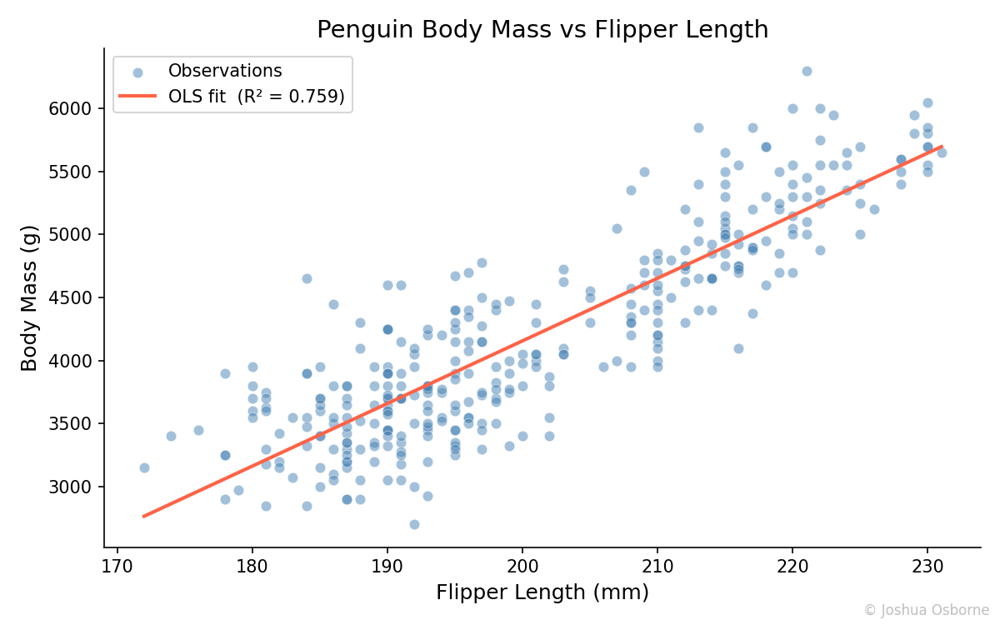

Statistics Notes
Prediction vs inference, supervised vs unsupervised learning, and why we estimate f.
Contents
Assume we have some data that can be represented by the general equation: \[Y = f(X) + \epsilon \tag{1}\] where \(\epsilon\) represents the error in our prediction. There are two types of error: reducible and irreducible. In this case, \(\epsilon\) represents our irreducible error; for more information on this topic, visit the bias-variance tradeoff. notice the use of “X” here rather than “x”. Here, X represents a group of \(X = (x_1, x_2, ..., x_p)\) predictors.
put in simple words: we are trying to find a function, f, that given an input, x, can predict the true value, y or to make a prediction for future information. An example is in the penguin dataset when comparing the body mass to the flipper length:

in this case flipper length is the independent variable (x) and the body mass is the dependent variable (y), and the function we used was a simple linear line: \(y=\beta_0 + \beta_1*x_1\) . Although I have shown a simple linear fit here, the reality is that we can fit very complex functions to our dataset (although it is clearly not needed here).There are really only two reasons we ever estimate \(f\), and it is worth being honest about which one you are doing because it changes how you build the model:
Prediction: we just want accurate outputs for new inputs. We treat \(\hat{f}\) as a black box; nobody cares what is inside as long as \(\hat{y} = \hat{f}(x)\) lands close to the truth. A model forecasting tomorrow’s electricity demand is doing prediction.
Inference: we want to understand how \(Y\) changes with each predictor. Which predictors matter? Is the relationship positive or negative? Linear or more complicated? Here the form of \(\hat{f}\) is the entire point, and a black box is useless. Asking “does flipper length actually drive body mass, and by how much per mm?” is inference.
The tension: flexible models (deep nets, boosted trees) tend to predict better but explain worse; simple models (linear regression, Generalized Linear Models) explain beautifully but may underfit. This is the same tension as the bias-variance tradeoff, wearing different clothes.
| Symbol | Type | Meaning |
|---|---|---|
| \(Y\) | scalar | true value of the response variable |
| \(X\) | vector | the group of predictors \((x_1, x_2, ..., x_p)\) |
| \(p\) | integer | number of predictors |
| \(f\) | function | the true (unknown) relationship between \(X\) and \(Y\) |
| \(\hat{f}\) | function | our estimate of \(f\), learned from training data |
| \(\hat{y}\) | scalar | our model’s prediction, \(\hat{f}(x)\) |
| \(\epsilon\) | scalar | irreducible error, \(\mathbb{E}[\epsilon] = 0\) |
| \(\beta_0, \beta_1\) | scalars | intercept and slope parameters in a linear model |
| \(n\) | integer | number of observations in the training data |
There are two types of machine learning: supervised learning and unsupervised learning.
Supervised learning is everything described above: every training observation comes as a pair \((x_i, y_i)\), so the data itself supervises the fit. We know the right answer for the data we trained on, and we can directly measure how wrong the model is. Regression (continuous \(y\), like the penguin body mass) and classification (categorical \(y\), like spam vs not spam in Naive Bayes) are the two big families.
Unsupervised learning has no \(y\) at all. We only observe \(x_1, ..., x_n\) and the question changes from “predict the response” to “find structure”: are there natural clusters of similar observations? Can the \(p\) predictors be compressed into fewer dimensions without losing much? There is no answer key, which makes evaluation fundamentally harder; we can never compute an error against a truth we do not have.
a useful mental check: if you deleted one column from your dataset and the whole problem stopped making sense, that column was \(y\) and you were doing supervised learning.
the error term \(\epsilon\) in equation (1) and what we can and cannot do about it: bias-variance tradeoff
the simple linear fit in the penguin figure, and when OLS is provably the best way to fit it: Gauss-Markov Theorem
what to do when \(y\) is not continuous and unbounded (binary outcomes, counts): Generalized Linear Models
a classifier built directly from Bayes Rule: Naive Bayes